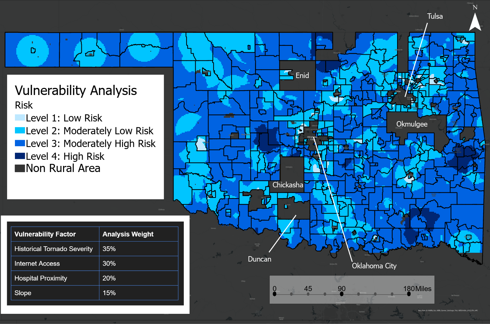
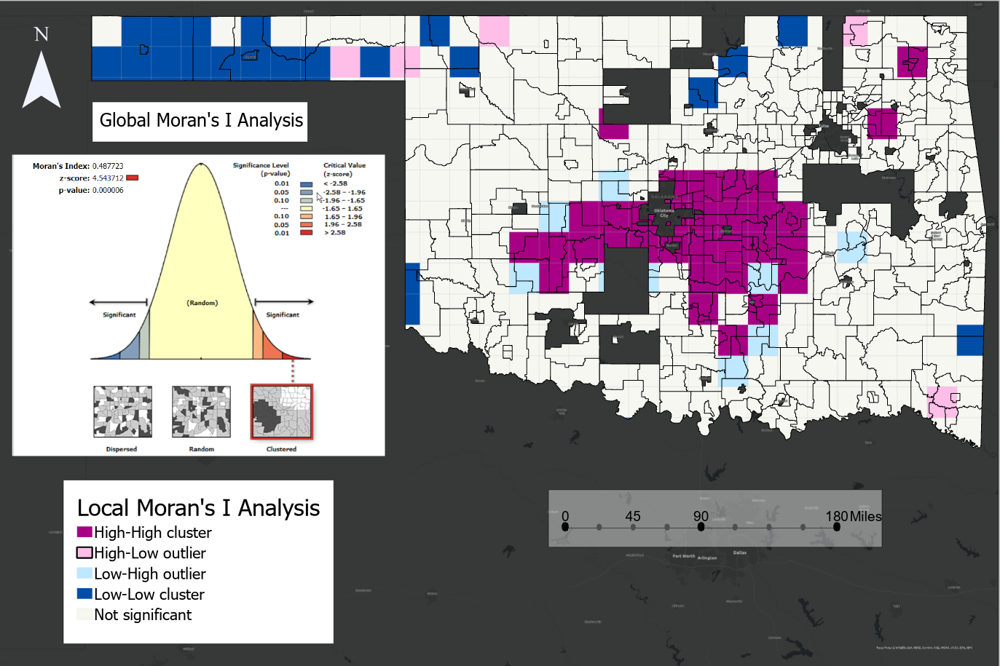
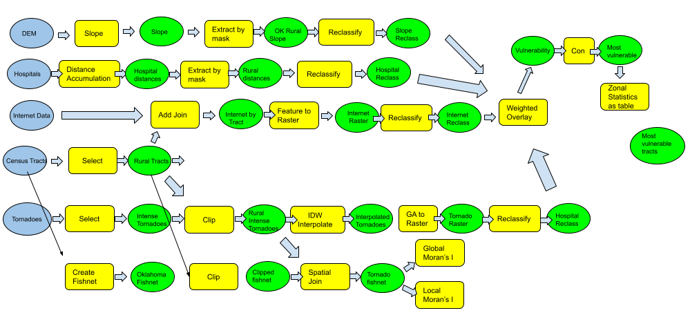

Tornado Vulnerability Analysis
Existing disaster literature primarily evaluates densely populated areas due to elevated casuality rates and infrastructure destruction. However, these studies ignore underlying environmental and social vulnerabilities that disproportionately impact rural communities. This project assessed spatial patterns rural Oklahoma tornado vulnerability, quantifying risk based on historical tornado occurence, topography, proximity to hosspitals, and tornado warning technology.

Weighted sum vulnerability analysis using social and environmental factors

Tornado occurence spatial autocorrelation from Global and Local Moran's I cluster analyses

ArcGIS model of geoprocessing methods